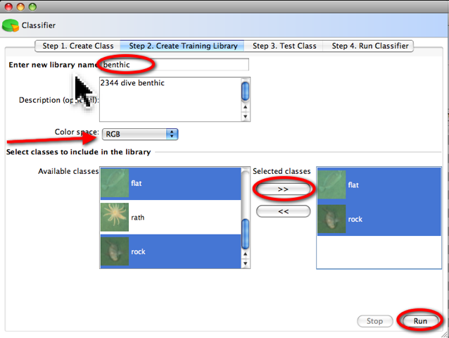
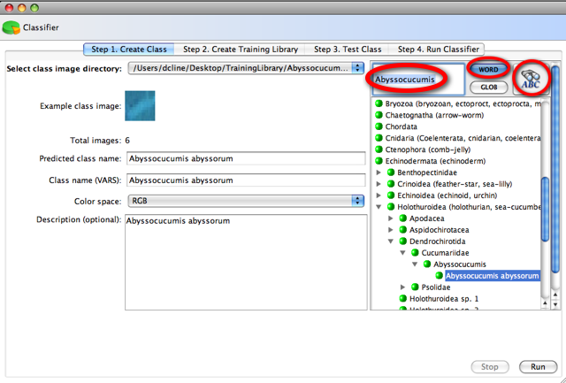

Automated
Visual Event Detection and Classification
AVEDac
Classifier Step 3. Create Training Library
Creating a training library
In this view, a statistical pattern for a selected class can be created be clicking Run. You only need to run this once after you have a suitable number of images in a class. Run this again if you have recently added any images to a class, and run this for every class you want in your training library. If you have labeled event class names in the EventTable or EventThumbnail views, these classes will be automatically be generated in directories with the same class name.Enter unique library name Color space should be set to RGB/YCBCR unless you are working with grayscale images Performance may be improved in a different color space. Select classes to include by double clicking any available class, or selecting then clicking the >> button |  |
Searching the VARS knowledge base for a class name
The Video Annotation and Reference System (VARS) is a software interface and database system that provides tools for describing, cataloging, retrieving, and viewing the visual, descriptive, and quantitative data associated with MBARI's deep-sea video archives. If you are running this tool inside the MBARI firewall, you will see the searchable tree displaying the VARS Knowledge Base component. Sorry, but this tool is not available outside of MBARI.To search for an item, enter the name, select Word or Glob, then the binoculars to search. Be patient, the search may take a a few minutes, depending on your internet connection speed. If the name is found, double click to copy the name to the Class name (VARS) field. This field can be left empty if not using VARS.
